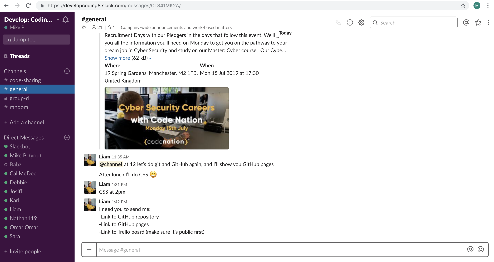
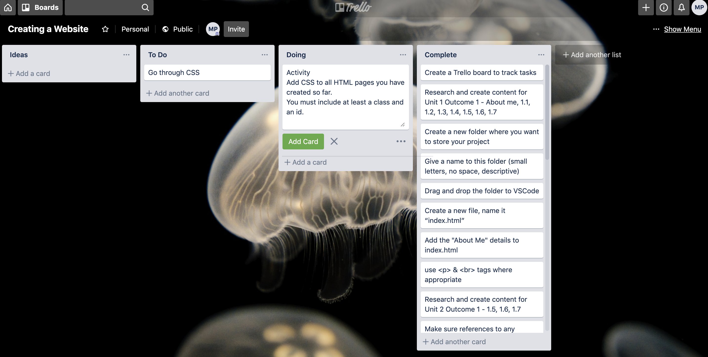
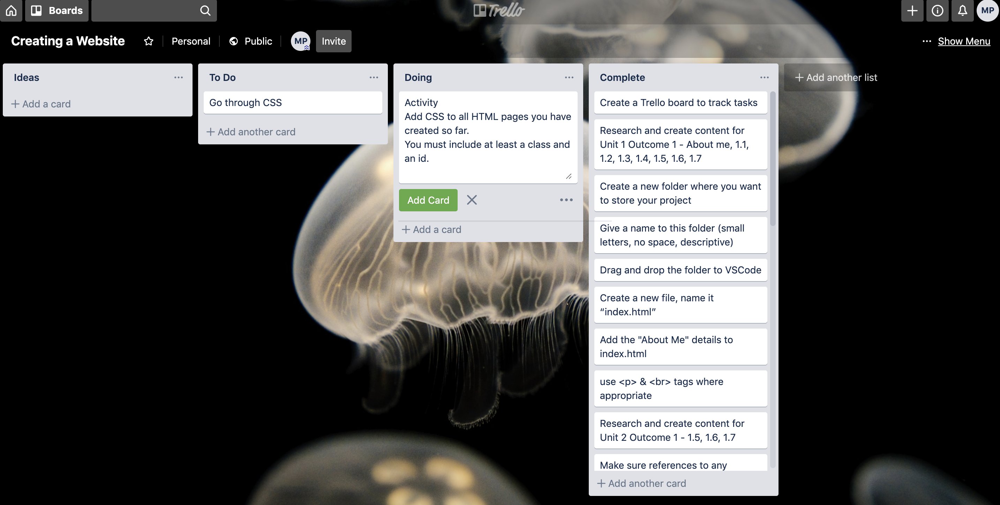
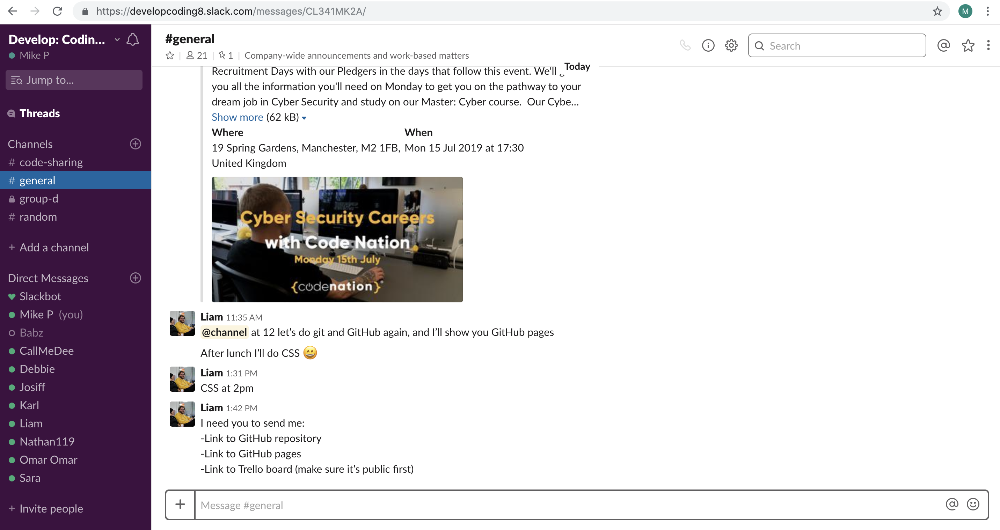
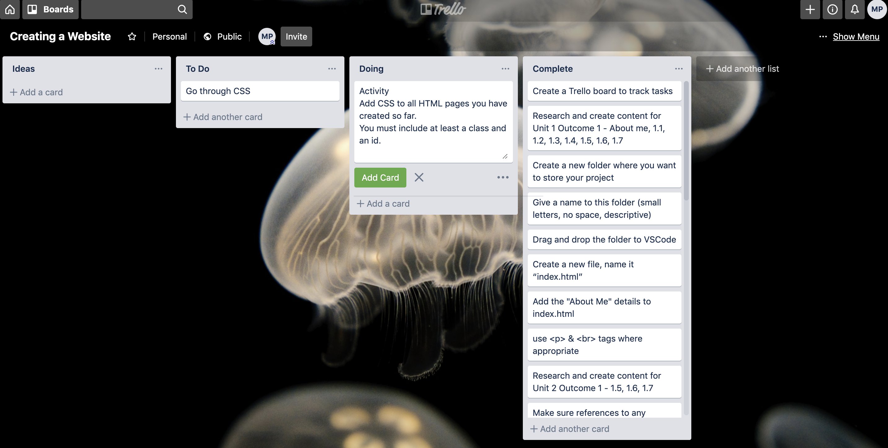

 



I have been interested in technology for the last 30 years from when I was a teenager using an Amiga 500
in the 1990’s.
I managed to get a trainee position at Barclays Bank in 1998 where I became a Mainframe Operations
Analyst.
While in this role, I gained experience in programming a couple of programming languages
and scheduling tools. In my later years doing this, I was the lead of a small team of 3 running
Operational Acceptance Testing cycles and also the implementation into the production environment.
After 12 years at Barclays, I fancied a change so left there and subsequently had contract positions
working for the Halifax, Co-Op Bank and RBS/IBM doing a similar role to previously.
I have also been programming Arduino microcontrollers as a hobby for the last couple of years.
I’m attending the course at CodeNation to bring me up to date with the more recent digital development languages/tools & processes which will hopefully lead to employment.